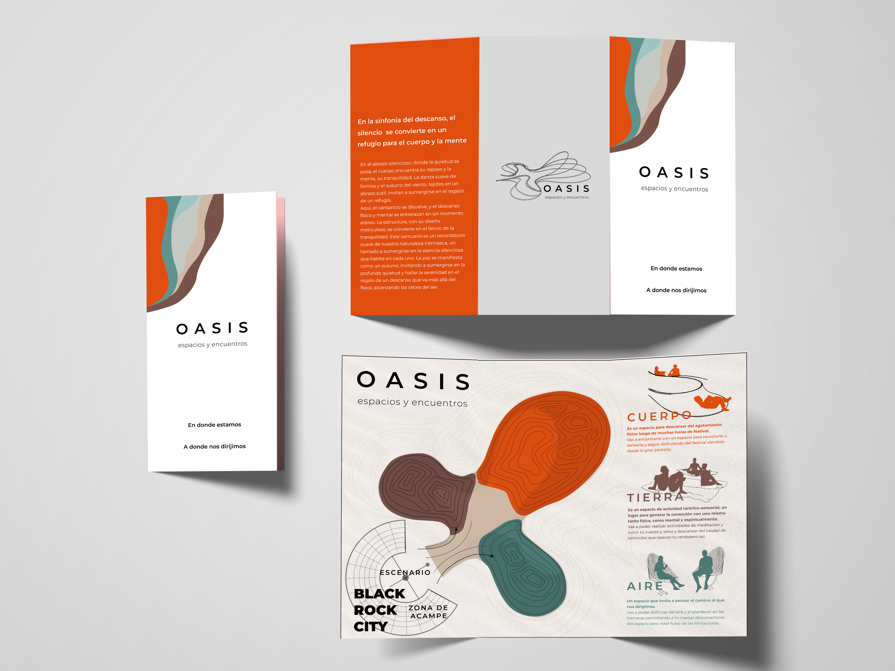
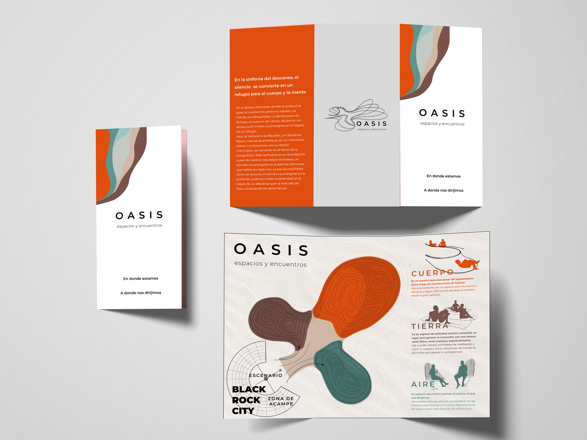

OASIS
2023
UTDT
DISEÑO INTEGRAL
Esta tesis surge de la observación de la dinámica única de Burning Man, identificando la carencia de espacios para el descanso. Propone un "Oasis Efímero" que va más allá de ser un simple refugio, fusionando diseño industrial con la filosofía del festival. Busca crear un espacio integral para desconectar, recargar energías y encontrar respiro, no solo atendiendo a necesidades físicas, sino también ofreciendo una experiencia de descanso, reflexión y renovación en medio del caos del desierto transformado en ciudad.
 

Proyecto individual de Tesis para la Universidad Torcuato Di Tella.